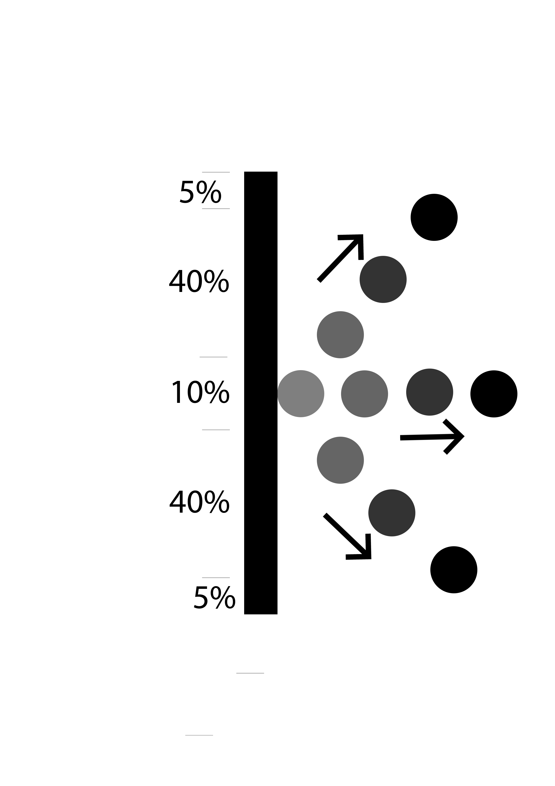

About the Game!
Version History
-
1.1.0 Beta
- Multiplayer Pong Game
- Up to two players in the lobby
-
1.0.1
- Added Options to customise the user expreince of the game
-
1.0.0
- Single Player Pong Game
- Fixed Amount of Rounds
Description
Pong is one of the earliest arcade video games. It is a table tennis sports game featuring simple two-dimensional graphics. The game was originally manufactured by Atari, which released it in 1972. Allan Alcorn created Pong as a training exercise assigned to him by Atari co-founder Nolan Bushnell. Bushnell based the idea on an electronic ping-pong game included in the Magnavox Odyssey, which later resulted in a lawsuit against Atari. Surprised by the quality of Alcorn's work, Bushnell and Atari co-founder Ted Dabney decided to manufacture the game. (Wikipedia, Read More.. )
In this project we try to recreate the pong game from the ealy 70's, as an online multiplayer 2D game.
Installation
1. Moving to the Current Project Directory
In-order to create the server we need to first install some dependencies.
To do that we need to first move to the project directory,
So we can use the cd command to move to where the server.js file is located.
cd /[path to directory]/
If you have done it correctly, when you enter ls in the console you should see the following;
pc_name:2018Assignment1 user_name$ ls
node_modules package-lock.json package.json public server.js
Hooray!! So far you are in the correct directory.
Next part is a bit tricky. But don't worry, just follow the steps.
2. Installing the Node Modules
In order to install the node modules we have to first type in the command;
npm install
This will install all the dependencies needed for the program to run.After you install all the dependencies, to check whether they have been installed properly, we can use the following commands;
To check whether Express is installed properly, we can enter this command,
npm list express
If you have successfully installed it, you should see the output below.
└── express@4.16.3
To check whether Socket.io is installed properly, we can enter this command,
npm list socket.io
If you have successfully installed it, you should see the output below.
└── socket.io@2.1.1
3. Starting the Local Server
In-order to start the server, we have to just enter one command
node server.js
If you have done everything correctly, you should see the following message below.
Starting server on port 5000
4. Go to the server webpage
Start the browser and then enter the following address
http://localhost:5000/
If you have done everything correctly, you should see the index.html page from the project directory.Finally!!
Just click on the last link to go to the pong.html page, or click here.
How to play?
This game has two versions.
- Single Player
- Multiplayer
Single Player
Objective - The main objective of the game is to reach the game point first (Set to 11 by default).
- To start the single player game the user has to click on the Start button
- By default the game will let the user server the ball.
- To start each round the user has to click on the pong table.
- After the ball is being served the CPU will start playing with the user.
- The paddle is being divided into five zones
- Each zone refelcts the ball in a different pattern
- Below are the different reflection patterns
- If the ball hits the top 40% it will move towards the top with the same gradient,
If it hits the bottom 40% it will move towards the bottom with the same gradient.
The speed of the ball does not change. - If the ball hits the middle 10%, it will move in a random direction out of three directions.
They are either going straight or going up and down with the same gradient.
The speed of the ball does not change.

- If the ball hit the top 5% , it will go up with a higher gradient than the normal gradient of the game,
If the ball hit the bottom 5% , it will go down with a higher gradient than the normal gradient of the game,
The speed of the ball does change with an increase of 50%.


In single player, we can adjust the settings of the game.
- Difficulty -
- Used to increase or decrease the difficulty of the game
- Can be adjusted from 0.1 - 5, where 10 being the heighest difficulty
- By default its 2
- Player Side -
- Used to chnage the user paddle side of the game
- Can be adjusted between left and right
- By default its Left
- Game Point -
- Used to change the ending game point of the game
- Can be adjusted from 2 - 42
- By default its 11
- Paddle Height -
- Used to change the paddle height in the game
- Can be adjusted from 10% of Table Height - 80% of Table Height
- By default its 60
- Table Height -
- Used to change the height of the pong table
- Can be adjusted from 300 - 1000
- By default its 600
- Table Width -
- Used to change the width of the pong table
- Can be adjusted from 300 - 1000
- By default its 600
- Center Line Dash Gap -
- Used to change the spacing between the lines of the center table
- Can be adjusted from 10 - 40
- By default its 20
- Padding Around the Play Area -
- Used to adjust the padding of the play area of the pong table
- Can be adjusted from 30 - 100
- By default its 50
- Frame Rate -
- Used to adjust the frame rate of the ball. (i.e how often to update the location of the ball)/li>
- Can be adjusted from 1 - 10, where 1 being the highest frame rate
- By default its 1
Multiplayer
To play the multiplayer game there should be two devices.
- Host Device
- Client Device
Steps to Setup a Multiplayer Game
- First, Both devices should be on the same network
- From the HOST DEVICE, start the local server using the last method in the intallation process and
go to its localhost address. It will be something like this: - Then the CLIENT DEVICE should connect to the IP Address of the HOST DEVICE. If it is on a LAN or WiFi network. It will look something like this:
- Then from the CLIENT DEVICE, click on the last link and go to the pong.html page
- Using the HOST DEVICE click on the Create Game, You will get an autogenerated GameID.
- On the CLIENT DEVICE, Enter the GameID at the text box above the Join Game button and click on the Join Game button
- Finally the HOST DEVICE has to click on the pong table to start serving.
The user on the HOST DEVICE will be the only person to serve through out the whole game.
But the serving side changes as in Single Player
http://localhost:5000/pong.html
http://192.168.8.101:5000/
Instead of the IP Address please use the IP Address of the HOST DEVICE in the WiFi Network.
If the connection is successful, the CLIENT DEVICE should go to the index page of the project.
Everything is Okay. Both Devices working on the same server.
Brilliant!! . Now Both Devices are on the same game. You should see the paddle moving one both the devices when you move it on one device.